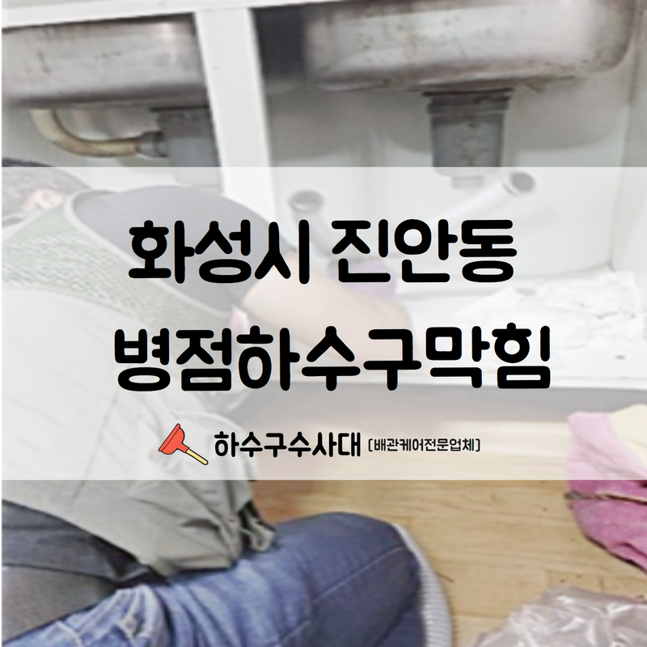
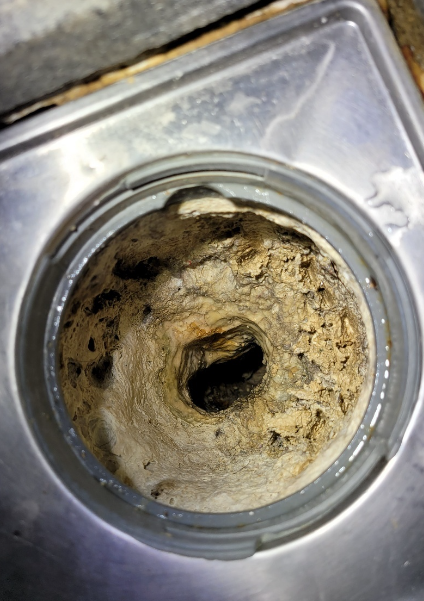
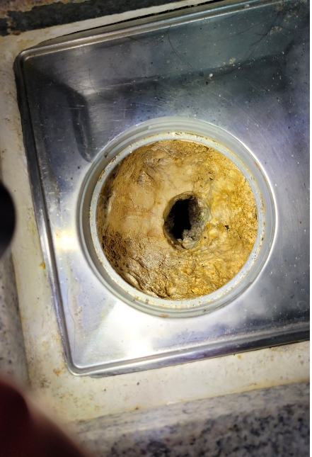
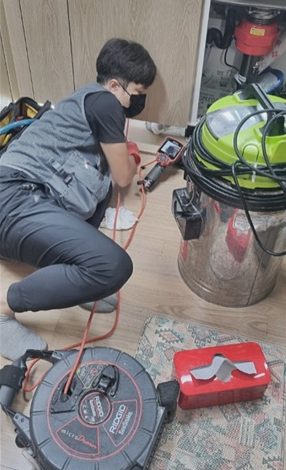
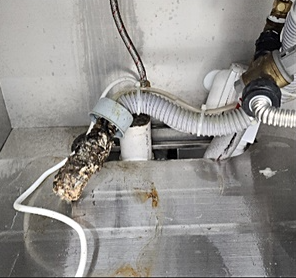
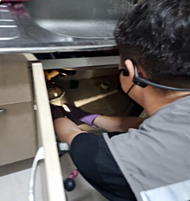
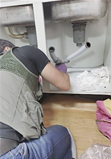

🏠 화성시 진안동 병점하수구막힘 신속하고 깔끔한 수리를 진행하여 드렸습니다!
화성 병점 싱크대막힘 전문 시공 후기

📋 작업 개요
- 위치: 화성 병점, 병점, 화성
- 서비스 유형: 싱크대막힘, 변기막힘, 하수구막힘, 배관막힘, 뚫는업체, 배관청소, 고압세척
- 작업 일시: 2022. 8. 5. 23:04
- 업체명: 하수구수사대 (010-5615-2118)
🔍 문제 상황
안녕하세요.하수구수사대 입니다.반갑습니다.
평상시에 잘 사용하고 계시던 변기에 문제가 발생되었다면 여러분들은 어떻게 대처하실 건가요? 대부분 갑작스러운 상황에 어떻게 대처해야 할지 몰라 발만 동동 구르게 되실 텐데요. 이번 화성시 진안동 병점하수구막힘 현장 역시 갑작스러운 변기 막힘으로 저희 업체를 찾아주셨습니다.
화성시 진안동 병점하수구막힘 작업을 진행하였습니다.
우리의 일상생활에서 볼 수 있고 실제로 많은 하수구가 이용되고 있습니다. 대체적으로 화장실 변기 싱크대 욕실에서 많이 볼 수 있는데요. 우리는 빈번하게 이러한 하수구들이 막히는 현상을 경험하곤 합니다. 그런 경우 정말 당황스럽고 사용하지도 못하는 불상사를 겪게 되는데요.
이러한 막힘의 현상은 원인이 다양합니다. 그에 따른 해결 방법 또한 매우 다양한데요. 이번 저희 작업은 관통기를 사용하여 작업을 진행하였습니다.

🔎 원인 분석
💡 전문가 진단: 화성시 진안동 병점하수구막힘 작업을 진행하였습니다.
막힘 작업은 해결 방법이 다양합니다.
간단한 이물질이 원인인 변기 막힘은 관통기나 석션기라는 장비를 사용해서 해당 문제를 간단히 해결하실 수 있습니다. 관통기는 변기 내부에 걸려 있는 이물질을 밀어내는 장비이고 석션기는 변기 안에 쌓여 있는 이물질을 흡입해 주는 장비인데요.
변이나 휴지로 인한 막힘 현상이 나타난 거라면 관통기나 석션기만으로도 손쉽게 해결이 가능합니다. 하지만 막힘 위치나 정도에 따라 변기를 뜯는 작업이 필요할 수도 있다는 점을 참고해 주시면 좋습니다
만약 배관 내부에 문제가 발생한 경우에는
관통기나 석션기만으로 해결이 어려울 수 있는데요. 이럴 때 업체 측에서 사용하는 대표적인 장비 중 하나가 전동 와이어 스프링입니다. 이 장비는 스프링을 깊게 투입하여 작업을 진행합니다.

🔧 작업 과정
배관 내부를 긁어낼 수 있는 장비로 물에 잘 녹지 않는 물티슈 혹은 머리카락이 배관에 쌓여 있을 때 간단히 해결할 수 있는 전문 장비입니다. 하지만 단순히 이물질을 긁어내는 것으로는 문제를 해결하기 어렵기 때문에 와이어 스프링을 사용한 후 석션기를 이용하여 흡입하여 변기뚫는반벙이 진행됩니다.
수리는 정확한 원인을 파악한 후 진행해야 합니다.
전동 와이어 스프링을 사용하여 문제를 해결하였지만 얼마 지나지 않아 동일한 현상이 다시 반복될 수가 있습니다. 이런 경우에는 복합적인 원인으로 변기 막힘이 발생한 것일 텐데요.
변기 막힘 원인으로는 이물질, 배관 구조 문제, 배관 파손 등과 같이 여러 가지 원인으로 발생할 수 있어서 막힘 현상이 반복될 경우 내시경 카메라를 투입하여 정확한 위치를 탐지하는 것이 좋습니다.
화성시 진안동 병점하수구막힘 현장도 원인 파악 후 빠른 해결을 해드렸는데요.
변기 자체 문제인 경우 관통기와 석션기를 활용한 작업으로 간단하게 해결할 수 있고 변기 배관에 문제가 발생했을 경우 스프링 청소나 고압 세척 방법을 적용하게 됩니다.
이런 작업들은 관련 지식이 없는 경우 쉽게 접근하기 어려운 방식이기 때문에 화성시 진안동 병점하수구막힘이 발생하였다면 신속하고 정확한 해결을 위해서 저희 하수구수사대를 찾아주시기 바랍니다.
더 궁금하신 사항이나 시공 문의는


✅ 작업 완료
첨부된 링크를 이용하여 주시길 바랍니다.
경기도 화성시 효행로 1060 10층 1004-A246호




⚠️ 주방 싱크대 배관 막힘 예방 수칙
- ✅ 기름기가 묻은 식기나 프라이팬은 설거지 전 키친타올로 반드시 기름때를 닦아내세요.
- ✅ 주기적으로 싱크대 개수대에 뜨거운 물을 가득 받아 한 번에 내려 배관 내부 기름을 씻어내세요.
- ✅ 배수구 거름망을 미세한 필터로 사용하시고 음식물 찌꺼기가 틈으로 새어 들지 않게 관리하세요.
- ✅ 베이킹소다와 식초를 뜨거운 물과 함께 일주일에 한 번씩 부어주면 배관 살균과 막힘 예방에 좋습니다.
💡 핵심 정리
- 확실한 장비 작업(내시경 점검 및 샤프트 스케일링)으로 원인을 뿌리 뽑습니다.
- 작업 후 1년 이내에 동일한 부위 재발 시 100% 무상 A/S 서비스를 보장합니다.
- 서울 · 경기 · 인천 전 지역에 24시간 언제든 긴급 출동할 수 있도록 항시 대기 중입니다.
❓ 자주 묻는 질문 (FAQ)
🚨 화성 병점 싱크대막힘 문제로 고민이신가요?
정확한 원인 진단과 확실한 시공으로 재발 없는 해결을 약속드립니다.
24시간 긴급 출동 | 서울 · 경기 · 인천 전지역 | 1년 내 재발 시 무상 A/S